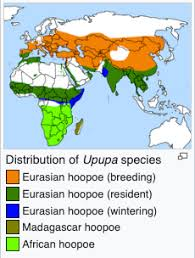

A búbos banka a madarak osztályán belül a szarvascsőrűmadár-alakúak rendjében a bankafélék családjába tartozó Upupa nem egyetlen faja.
Testhossza 25–29, szárnyfesztávolsága 44–48 cm, súlya 45–87 g. Rigónál nagyobb, tarka tollruhájú madár. Fején jellegzetes, sugarasan felmereszthető tollbóbitát visel, amely nyugalmi állapotban a tarkóra simul. A felnőtt egyedek feje, nyaka és egész alsóteste világos rozsdássárga. A hát és a szárnyak feketék, sűrű fehér harántsávozással. A farok fekete, a farktollak közepén széles fehér harántsáv húzódik. A bóbita tollai rozsdavörösek, az első 4–5 toll vége fekete, a leghosszabb tollak vége fehér-fekete. A fiatalok színezete elmosódottabb, halványabb, bóbitájuk nem olyan fejlett, mint a felnőtt egyedeké. A csőr enyhén lefelé ível, hosszú, csipeszszerű és fekete. A láb ólomszürke, a szem sötétbarna.
Táplálékát rovarok (főleg sáska, tücsök, cserebogár, lótetű), valamint lárvák, pajorok, kukacok és giliszták képzik, melyeket hosszú csőrével a földből szedeget ki. Szívesen elfoglalja a harkályok odúit, de bármilyen alkalmas faodúban, üregben, kőrakásban költ, akár talajszinten is. 5–8 piszkosfehér tojásán kizárólag a tojó kotlik, miközben a hím a táplálékot hordja. A fiókák etetésében mindkét szülő részt vesz. A fiókák veszély esetén bűzös ürüléket spriccelnek támadójuk felé, és a költőüreg is tele van bűzös ganéval – erre utal a madár számos népies neve: büdösbanka, szurtos dudu, ganajmadár, fostos bugybóka stb.
A búbosbanka Eurázsia nagy részén fészkel, Spanyolországtól egészen Közép-Ázsiáig megtalálható. Magyarországon rendszeres fészkelő, főként alföldi és dombvidéki területeken. Vonuló madár, a telet Afrika szubszaharai régióiban tölti, így szeptember–október táján elvonul, és március végén, április elején tér vissza. A hímek gyakran korábban érkeznek, mint a tojók, hogy elfoglalják a legjobb fészkelőhelyeket.
A búbosbanka régóta ismert és megfigyelt madár az ember közelében is. Gyakran tűnik fel gyümölcsösökben, szőlőhegyeken, tanyaudvarokon vagy régi, lakatlan épületek környékén. Jellegzetes kinézete és hangja miatt sok népmesében, versben és gyermekdalban szerepel. Mivel főként rovarokkal táplálkozik, hasznos segítője lehet a mezőgazdaságnak, különösen ott, ahol a vegyszeres védekezés helyett természetes módszerekre törekednek. A fészekbűz miatt viszont egyes helyeken még ma is tévhitek övezik, pedig teljesen ártalmatlan és védett faj.